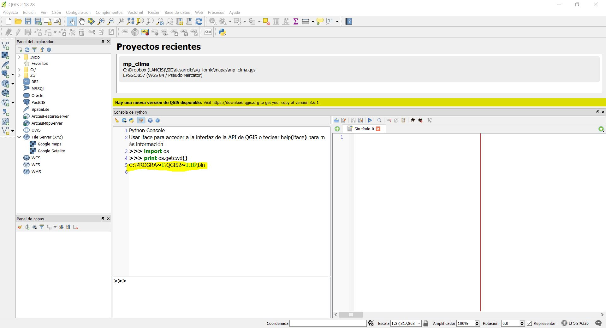

Instalación¶
Para instalar la libreria en python y qgis seguir los siguientes pasos:
abre qgis 2.18 y la consola de python integrada en la línea de comando escribe
import os
da un enter
escribe el siguiente comando
print os.getcwd()
Para insertar imágenes :
